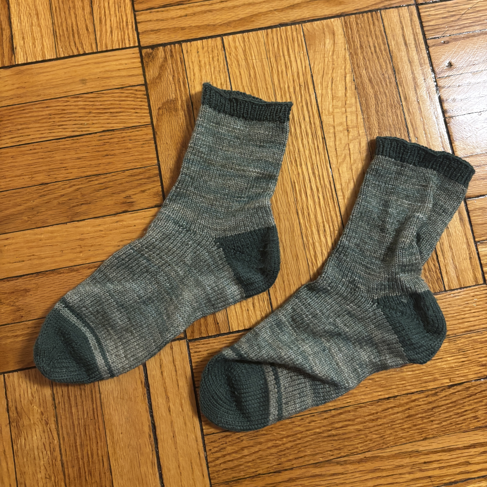
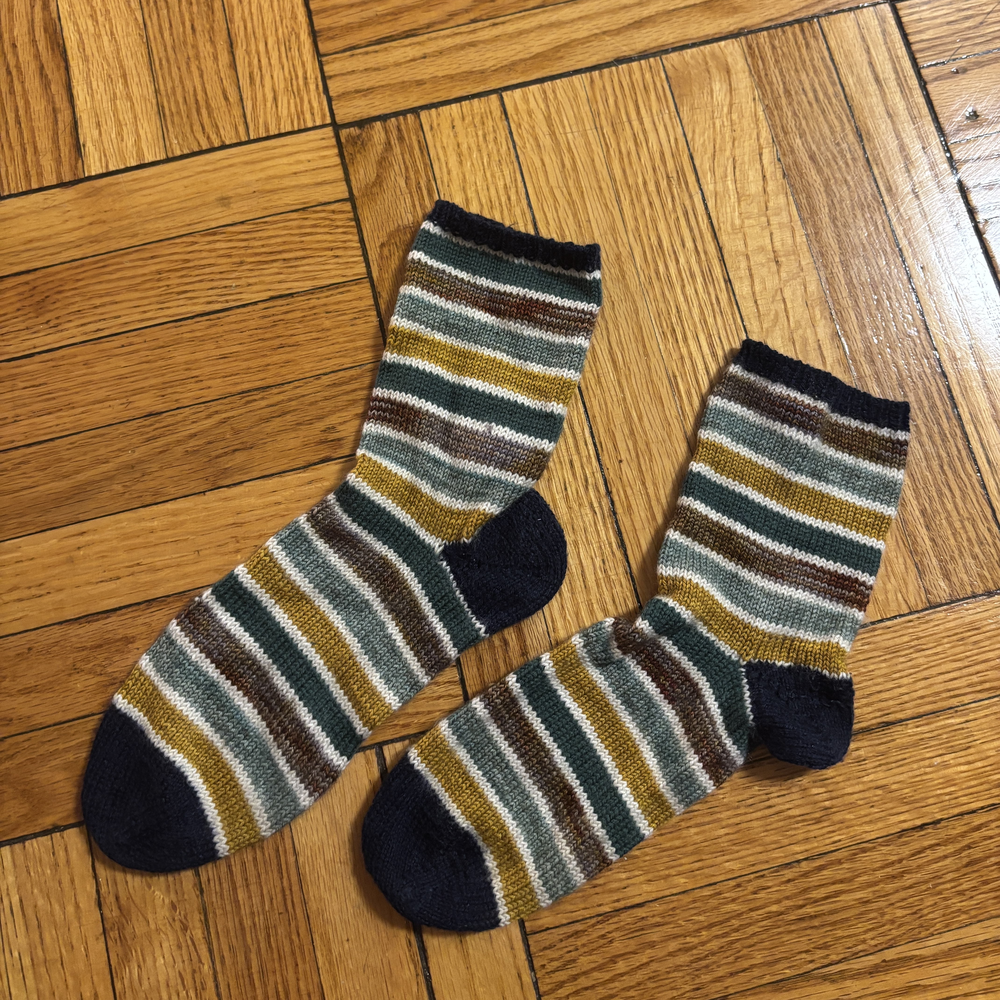

Winter Gear

I really like making hats; they are a good travel project and easy to gift (measurements do not need to be as specific as with socks).

I am from Texas, and it gets soo cold here. These have been a lifesaver.
I really like making hats; they are a good travel project and easy to gift (measurements do not need to be as specific as with socks).
I am from Texas, and it gets soo cold here. These have been a lifesaver.

This is the first pair of socks I made (after a singular trial sock). They are actually pretty green--I need to retake this in a different lighting.

The second pair of socks I made (shortly after the first).

I made this third pair of socks several months later. The sheer number of color changes made this very tedious--never again! (I actually forgot the last stripe on the second sock I made. It will probably never be fixed.)